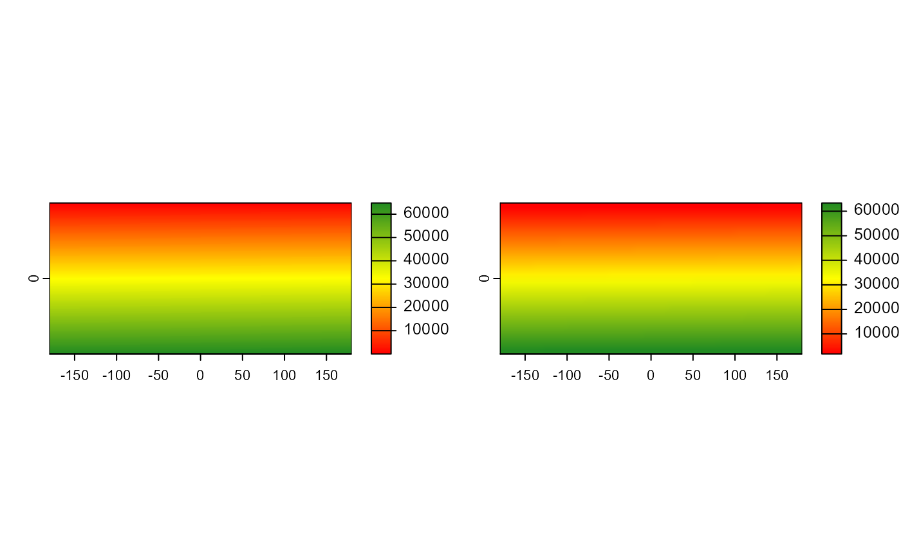

Aggregate a SpatRaster to create a new SpatRaster with a lower resolution (larger cells), using the GDAL's gdal_translate utility https://gdal.org/programs/gdal_translate.html
Arguments
- mosaic
SpatRaster
- pct
The size as a fraction (percentage) of the input image size. Either a scalar (eg., 50), or a length-two numeric vector. In the last, different percentage reduction/expansion can be used for columns, and rows, respectively.
- fun
The resampling function. Defaults to
nearest, which applies the nearest neighbor (simple sampling) resampler. Other accepted values are: 'average', 'rms', 'bilinear', 'cubic', 'cubicspline', 'lanczos', and 'mode'. See Details for a detailed explanation.- in_memory
Wheter to return an 'in-memory'
SpatRaster. IfFALSE, the aggregated raster will be returned as an 'in-disk' object.
Examples
library(pliman)
library(terra)
#> terra 1.7.83
#>
#> Attaching package: 'terra'
#> The following object is masked from 'package:pliman':
#>
#> distance
r <- rast()
values(r) <- 1:ncell(r)
r2 <- mosaic_aggregate(r, pct = 10)
opar <- par(no.readonly = TRUE)
par(mfrow=c(1,2))
mosaic_plot(r)
mosaic_plot(r2)

par(opar)